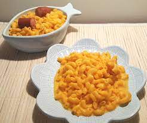

Macs famous mac-n-cheese

it's always sunny in philadelphia returns as one of the leaders of bizzare
food including "rum ham" and something called a "grilled frank". in the recipe,
we will be going over "macs-famous-mac-n-cheese"
- 1 box of mac-n-cheese
- 1/4 cup of butter
- 1/2 cup of milk
- 3 hotdogs
- boil 6 cups of water in a saucepan stir in pasta and cook
8-10 minutes until pasta is tender
- while pasta cooks, fry the hotdogs in a seperate pan
- drain pasta, do not rinse
- add butter, milk and cheese packet. mix well until creamy
- chop hotdogs into bite sized pieces and add to the mac-n-cheese